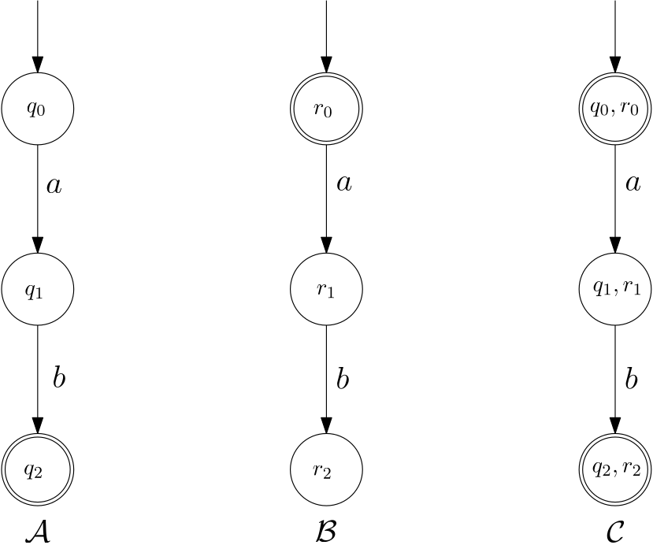

The product automaton construction
18/09/2024
Antoine Mottet
Introduction to Theory of Computation
- Finite Automata:
- DFA, NFA, regular expressions
- Equivalence of the models
- Myhill-Nerode characterization and minimization
- Closure properties and algorithms
- Pumping lemma
- Pushdown Automata:
- Determinism, non-determinism, non-equivalence of the models
- Context-Free Grammars
- Application: interpreters and compilers for programming languages
- Turing Machines:
- Many models...
- ... one concept? The Church-Turing thesis
- Undecidability
- Efficient decidability: polynomial-time Turing Machines
Finite Automata
So far
- (Deterministic, non-deterministic) automata as a data structure to represent (potentially infinite) sets
- Regular languages: those sets that can be represented this way
- Know how to check for membership: $w \in L(\mathcal A)?$
- Know how to check for emptiness: $L(\mathcal A)=\emptyset$?
class DeterministicFiniteAutomaton:
def __init__(self, ...):
...
# Does w belong to the set described by the automaton?
# Allows to write "w in A"
def __contains__(self, w):
...
# Is the set described by the automaton empty?
def empty(self):
...Today: operations on regular languages
- Other data structures (like Sets, Tuples, Lists, ...) come with methods to manipulate them easily.
- Sets have: intersection $(A\cap B)$, union $(A\cup B)$, difference ($A\setminus B$), issubset ($A\subseteq B$?)
def intersection(A, B):
...
def union(A,B):
...
def difference(A, B):
...
def issubset(A, B):
...Intersection: intuitive approach
- We want to check whether $w\in\{a,b\}^*$ is in $(aab)^*$ and in $L_{2}=\{w\in\Sigma^*\mid |w|\text{ even}\}$.
- We run automata representing $(aab)^*$ and $L_{2}$ simultaneously on $w$.
- To remember the current state of both automata, we must consider pairs $(q_A,q_B)$ of states
- There is a transition $(q_A,q_B)\overset{c}{\longrightarrow} (q'_A,q'_B)$ if $q_A\overset{c}{\longrightarrow} q'_A$ and $q_B\overset{c}{\longrightarrow}q'_B$ ($c\in \Sigma$)
Formal approach
Let $\mathcal A=(Q_A,\Sigma,\delta_A,q_0,F_A)$ and $\mathcal B=(Q_B,\Sigma,\delta_B,q'_0,F_B)$ be deterministic finite automata.
Let $\mathcal C=(Q_A\times Q_B,\Sigma,\delta_C,(q_0,q'_0),F_C)$ be the automaton where:
Let $\mathcal C=(Q_A\times Q_B,\Sigma,\delta_C,(q_0,q'_0),F_C)$ be the automaton where:
- $\delta_C((q,q'),a) = (\delta_A(q,a),\delta_B(q',a))$,
Let $w\in\Sigma^*$ and let $q\in Q_A$ (resp. $q'\in Q_B$) be the state reached by the run of $\mathcal A$ (resp. $\mathcal B$) on $w$.
Then the run of $\mathcal C$ on $w$ reaches the state $(q,q')$.
Therefore $\mathcal C$ accepts $w$ if, and only if, $\mathcal A$ and $\mathcal B$ accept $w$, and $L(\mathcal C)=L(\mathcal A)\cap L(\mathcal B)$.
Then the run of $\mathcal C$ on $w$ reaches the state $(q,q')$.
Therefore $\mathcal C$ accepts $w$ if, and only if, $\mathcal A$ and $\mathcal B$ accept $w$, and $L(\mathcal C)=L(\mathcal A)\cap L(\mathcal B)$.
Let $\mathcal A=(Q_A,\Sigma,\delta_A,q_0,F_A)$ and $\mathcal B=(Q_B,\Sigma,\delta_B,q'_0,F_B)$ be deterministic finite automata.
Let $\mathcal C=(Q_A\times Q_B,\Sigma,\delta_C,(q_0,q'_0),F_C)$ be the automaton where:
Let $\mathcal C=(Q_A\times Q_B,\Sigma,\delta_C,(q_0,q'_0),F_C)$ be the automaton where:
- $\delta_C((q,q'),a) = (\delta_A(q,a),\delta_B(q',a))$,
- $(q,q')\in F_C$ precisely if $q\in F_A$ and $q'\in F_B$.
Let $w\in\Sigma^*$ and let $q\in Q_A$ (resp. $q'\in Q_B$) be the state reached by the run of $\mathcal A$ (resp. $\mathcal B$) on $w$.
Then the run of $\mathcal C$ on $w$ reaches the state $(q,q')$.
Therefore $\mathcal C$ accepts $w$ if, and only if, $\mathcal A$ and $\mathcal B$ accept $w$, and $L(\mathcal C)=L(\mathcal A)\cap L(\mathcal B)$.
Then the run of $\mathcal C$ on $w$ reaches the state $(q,q')$.
Therefore $\mathcal C$ accepts $w$ if, and only if, $\mathcal A$ and $\mathcal B$ accept $w$, and $L(\mathcal C)=L(\mathcal A)\cap L(\mathcal B)$.
Let $\mathcal A=(Q_A,\Sigma,\delta_A,q_0,F_A)$ and $\mathcal B=(Q_B,\Sigma,\delta_B,q'_0,F_B)$ be deterministic finite automata.
Let $\mathcal C=(Q_A\times Q_B,\Sigma,\delta_C,(q_0,q'_0),F_C)$ be the automaton where:
Let $\mathcal C=(Q_A\times Q_B,\Sigma,\delta_C,(q_0,q'_0),F_C)$ be the automaton where:
- $\delta_C((q,q'),a) = (\delta_A(q,a),\delta_B(q',a))$,
- $(q,q')\in F_C$ precisely if $q\in F_A$ or $q'\in F_B$.
Let $w\in\Sigma^*$ and let $q\in Q_A$ (resp. $q'\in Q_B$) be the state reached by the run of $\mathcal A$ (resp. $\mathcal B$) on $w$.
Then the run of $\mathcal C$ on $w$ reaches the state $(q,q')$.
Therefore $\mathcal C$ accepts $w$ if, and only if, $\mathcal A$ or $\mathcal B$ accept $w$, and $L(\mathcal C)=L(\mathcal A)\cup L(\mathcal B)$.
Then the run of $\mathcal C$ on $w$ reaches the state $(q,q')$.
Therefore $\mathcal C$ accepts $w$ if, and only if, $\mathcal A$ or $\mathcal B$ accept $w$, and $L(\mathcal C)=L(\mathcal A)\cup L(\mathcal B)$.

Quiz: how to define $F_C$ so that $L(\mathcal C)=L(\mathcal A)\setminus L(\mathcal B)$?
- $(q_A,q_B)\in F_C$ if $q_A\in F_A$ and $q_B\not\in F_B$
- $(q_A,q_B)\in F_C$ if $q_A\not\in F_A$ and $q_B\in F_B$
- $(q_A,q_B)\in F_C$ if $q_A\not\in F_A$ and $q_B\not\in F_B$
Naive Implementation and Complexity
Let $\mathcal A=(Q_A,\Sigma,\delta_A,q_0,F_A)$ and $\mathcal B=(Q_B,\Sigma,\delta_B,q'_0,F_B)$ be deterministic finite automata.
Let $\mathcal C=(Q_A\times Q_B,\Sigma,\delta_C,(q_0,q'_0),F_C)$ be the automaton where:
Let $\mathcal C=(Q_A\times Q_B,\Sigma,\delta_C,(q_0,q'_0),F_C)$ be the automaton where:
- $\delta_C((q,q'),a) = (\delta_A(q,a),\delta_B(q',a))$,
- $(q,q')\in F_C$ precisely if $q\in F_A$ and $q'\in F_B$.
- Number of states: $|Q_A|\times |Q_B|$
- Optimal in general: any DFA recognizing $L_p\cap L_q$ has at least $pq$ states
- For implementation purposes, this can be optimized by only computing reachable states.
# Returns an "automaton" C that runs A and B in parallel
# Only final states are left undefined
def parallel(A,B):
assert(A.alphabet == B.alphabet)
states = { (q_A,q_B) for q_A in A.states for q_B in B.states) }
transition_map = dict()
for (q_A,q_B) in states:
for a in A.alphabet:
# Define the transition (q_A,q_B) -> (q'_A,q'_B) by q_A->q'_A and q_B->q'_B
transition_map[ ((q_A,q_B),a) ] = (A.transition_map[ (q_A,a) ], B.transition_map[ (q_B,a) ])
return (states, alphabet, transition_map, (A.initial_state, B.initial_state))
# Returns a deterministic automaton representing the set L(A) intersected with L(B)
def intersection(A, B):
(Q, Sigma, delta, q_0) = parallel(A,B)
final_states = set()
for q_A in A.states:
for q_B in B.states:
if q_A in A.final_states and q_B in B.final_states:
final_states |= {(q_A,q_B)}
return DeterministicFiniteAutomaton(Q, Sigma, delta, q_0, final_states)
Let $\mathcal A=(Q_A,\Sigma,\delta_A,q_0,F_A)$ and $\mathcal B=(Q_B,\Sigma,\delta_B,q'_0,F_B)$ be deterministic finite automata.
Let $\mathcal C=(Q_A\times Q_B,\Sigma,\delta_C,(q_0,q'_0),F_C)$ be the automaton where:
Let $\mathcal C=(Q_A\times Q_B,\Sigma,\delta_C,(q_0,q'_0),F_C)$ be the automaton where:
- $\delta_C((q,q'),a) = (\delta_A(q,a),\delta_B(q',a))$,
- $(q,q')\in F_C$ precisely if $q\in F_A$ or $q'\in F_B$.
- Number of states: $|Q_A|\times |Q_B|$
- Optimal in general: any DFA recognizing $L_p\cup L_q$ has at least $pq$ states
- For implementation purposes, this can be optimized by only computing reachable states.
# Returns an "automaton" C that runs A and B in parallel
# Only final states are left undefined
def parallel(A,B):
assert(A.alphabet == B.alphabet)
states = { (q_A,q_B) for q_A in A.states for q_B in B.states) }
transition_map = dict()
for (q_A,q_B) in states:
for a in A.alphabet:
# Define the transition (q_A,q_B) -> (q'_A,q'_B) by q_A->q'_A and q_B->q'_B
transition_map[ ((q_A,q_B),a) ] = (A.transition_map[ (q_A,a) ], B.transition_map[ (q_B,a) ])
return (states, alphabet, transition_map, (A.initial_state, B.initial_state))
# Returns a deterministic automaton representing the set L(A) union L(B)
def union(A, B):
(Q, Sigma, delta, q_0) = parallel(A,B)
final_states = set()
for q_A in A.states:
for q_B in B.states:
if q_A in A.final_states or q_B in B.final_states:
final_states |= {(q_A,q_B)}
return DeterministicFiniteAutomaton(Q, Sigma, delta, q_0, final_states)Application: Inclusion
- Observation: $L(\mathcal A)\subseteq L(\mathcal B)$ is equivalent to $L(\mathcal A)\cap \left(\Sigma^*\setminus L(\mathcal B)\right)=\emptyset$
$L(\mathcal A)\subseteq L(\mathcal B)$ $L(\mathcal A)\not\subseteq L(\mathcal B)$ - We have already implemented complement, intersection, and empty
def issubset(A,B):
C = intersection(A,B.complement())
return empty(C)- Works for all types of automata where complement, intersection, and empty exist
Application: Presburger Arithmetic

It is possible to algorithmically check whether a formula built with $\forall, \exists, \land,\lor,\neg,+,\leq$ is true in $\mathbb Z$.
$$\forall x\forall y\forall z\exists t (x+y=z+t)$$
$$\forall x\exists y\exists z\exists t (x\leq \max(y,z)-1 \land z\leq\max(x,t)-2\land t\leq \max(y,z)-3)$$
- Remember the encoding function $\operatorname{enc}_n\colon\mathbb N^n\to (\{0,1\}^n)^*$ where we have e.g. $$\operatorname{enc}_1(42)=010101\quad \operatorname{enc}_4(42,4,5,7) = \begin{pmatrix}0\\0\\1\\1\end{pmatrix}\begin{pmatrix}1\\0\\0\\1\end{pmatrix}\begin{pmatrix}0\\1\\1\\1\end{pmatrix}\begin{pmatrix}1\\0\\0\\0\end{pmatrix}\begin{pmatrix}0\\0\\0\\0\end{pmatrix}\begin{pmatrix}1\\0\\0\\0\end{pmatrix}$$
- We have seen that $L_+=\{ \operatorname{enc}_3(x,y,x+y) \mid x,y\in\mathbb N\}$ and $L_{\leq}=\{\operatorname{enc}_2(x,y)\mid x,y\in\mathbb N, x\leq y\}$ are regular
- By induction, every Presburger formula can be encoded into an automaton
Given a formula $\varphi$ in the language of Presburger arithmetic,
$\varphi$ is true in $\mathbb Z$ exactly if $L(\mathcal A_\varphi)$ is not empty.
Introduction to Theory of Computation
- Finite Automata:
- DFA, NFA, regular expressions
- Equivalence of the models
- Myhill-Nerode characterization and minimization
- Closure properties and algorithms
- Pumping lemma
- Pushdown Automata:
- Determinism, non-determinism, non-equivalence of the models
- Context-Free Grammars
- Application: interpreters and compilers for programming languages
- Turing Machines:
- Many models...
- ... one concept? The Church-Turing thesis
- Undecidability
- Efficient decidability: polynomial-time Turing Machines
Antoine Mottet